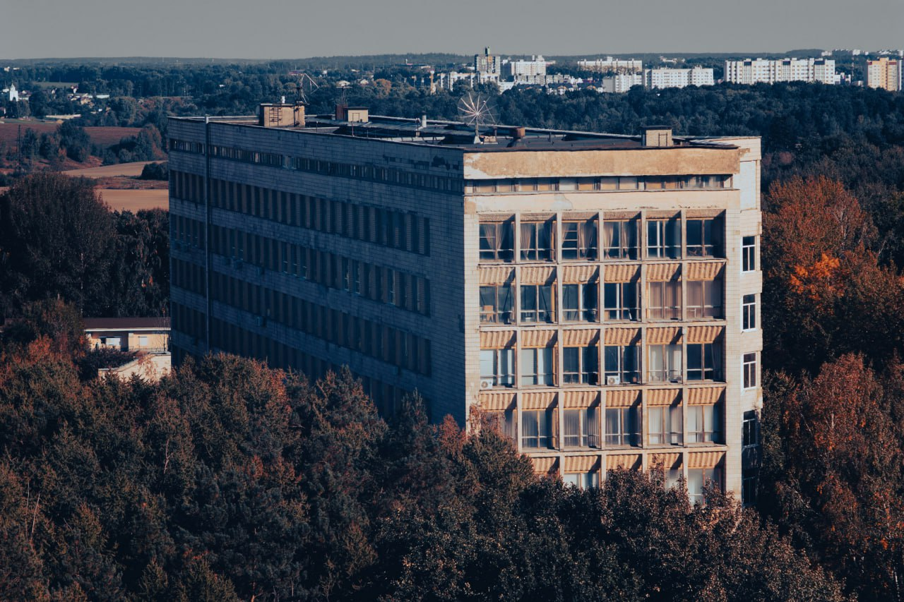

Национальный научно-исследовательский центр мониторинга озоносферы — структурное подразделение Белорусского государственного университета. Центр обеспечивает наблюдения за состоянием озонового слоя, УФ-излучения и приземного озона в Беларуси, разрабатывает измерительные приборы и участвует в международных программах ВМО.
